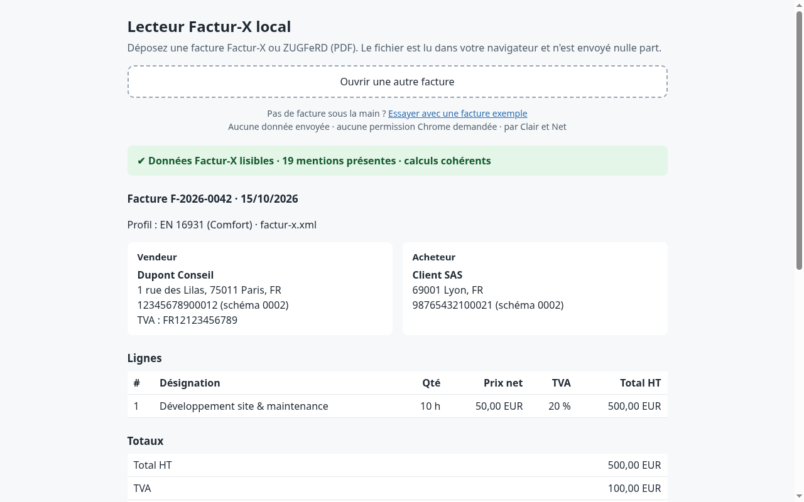

Une facture Factur-X ressemble à un PDF ordinaire, mais elle contient aussi un fichier XML avec ses données : vendeur, acheteur, lignes, TVA, totaux. Un lecteur PDF montre la page ; il ne montre pas ce XML, ni ce qui y manque.
Le Lecteur Factur-X local est une extension Chrome gratuite qui ouvre ce XML et l'affiche en clair, directement dans votre navigateur.

Les validateurs en ligne demandent de téléverser la facture, avec ses montants et souvent un IBAN. Ici, rien ne quitte votre ordinateur : pas de serveur, pas de compte, aucune permission Chrome demandée. Détails dans la politique de confidentialité.
Déposez-le dans le lecteur : s'il ne trouve pas de XML embarqué, il le dit. Renommer un PDF ordinaire ne le transforme pas en Factur-X.
Non. C'est un contrôle indicatif de la présence des données, ni une validation de conformité ni un avis juridique. Votre plateforme agréée reste la référence.
Factur-X et ZUGFeRD 2.x (syntaxe CII). ZUGFeRD 1.0 et UBL reçoivent un message clair mais ne sont pas affichés.
L'extension est publiée pour Chrome. Edge et les autres navigateurs basés sur Chromium installent en général les extensions du Chrome Web Store.
Clair et Net est l'activité de Killian Hoarau, entrepreneur individuel. Extension réalisée avec l'aide d'une IA et testée sur 151 factures publiques.